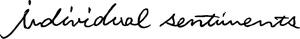

Trade Mark Journal No.2025/031 1 August 2025
WO0000001847549 (14,16,18,20,24,25,26,35)
Office of origin: Japan
Date of International Registration:8 October 2024
Date of designation in the UK:
8 October 2024

International priority date claimed: 8 August 2024
(Japan)
- Class 14
- Personal ornaments [jewellery, jewelry (Am.)]; cuff links; clocks and watches; chronometric instruments; watch bands and straps; jewellery boxes; key holders; trophies [prize cups]; commemorative shields; precious metals; jewellery; semi-wrought precious stones; unwrought precious stones; jewelry bags of textile material [empty]; jewelry cases of paper.
- Class 16
- Stationery; pocket memorandum books; pen cases; pens [office requisites]; envelopes; seals [stationery]; clear file holder; sticky note; notepads; desktop business card holders [stationery]; book covers; bookmarkers; stickers for smartphones and mobile phones; files [office requisites]; folders for papers; note books; stickers [stationery]; cards; address labels; adhesive labels of paper; paper boxes for holding small articles; paper containers for holding small articles; small storage boxes of paper; paper and cardboard; catalogues; printed matter; photographs; apparatus for mounting photographs; hygienic hand towels of paper; towels of paper; table napkins of paper; hand towels of paper; handkerchiefs of paper.
- Class 18
- Bags; pouches; card cases; card cases [notecases]; commutation-ticket holders; pouches for holding personal items; trunks and travelling bags; briefcases; handbags; suitcases; travelling trunks; rucksacks; purses and wallets; key cases; business card cases; cases for holding small articles for household use, of leather or imitation leather; clothing for domestic pets; industrial packaging containers of leather; industrial packaging containers of imitation leather; bags [envelopes, pouches] of leather, for packaging; vanity cases [not fitted].
- Class 20
- Furniture; sofas; mirrors [looking glasses]; wall mirrors; hand-held mirrors [toilet mirrors]; chests, not of metal; cushions; Japanese floor cushions [zabuton]; pillows; mattresses; boxes of wood, bamboo, or plastic for holding small articles; clothes hangers; garment covers [storage]; keyboards for hanging keys; kennels for household pets; beds for household pets; dog kennels; nesting boxes for small birds; nesting boxes for household pets; pet cushions; hand-held flat fans; hand-held folding fans; benches.
- Class 24
- Towels of textile; handkerchiefs of textile; bedsheets; futon quilts; covers for futon quilts; futon ticks [unstuffed futon]; pillowcases; blankets; covers for cushions; seat covers of textile; wall hangings of textile; curtains; table cloths, not of paper; bedspreads; table covers.
- Class 25
- Clothing; headwear; socks; gloves as clothing; mufflers [clothing]; neckties; scarves; underwear; nightwear; dance clothing; dancing shoes; footwear; clothes for sports; special footwear for sports; garters; sock suspenders; braces [suspenders] for clothing; waistbands; belts for clothing.
- Class 26
- Hair ornaments; hair pins; hair bands; clothing buckles; badges for wear, not of precious metal; brooches for clothing; ornamental adhesive patches for jackets; brassards; buttons.
- Class 35
- Advertising and publicity services; organization of exhibitions for commercial or advertising purposes; arranging of contracts, for others, for buying and selling of goods; arranging of contracts, for others, for buying and selling of goods via the Internet or catalogues; provision of information concerning commercial sales; business management analysis and business consultancy; marketing research and analysis; marketing services; promotional services; planning of advertising and promotion; import-export agency services; retail services or wholesale services for personal ornaments [jewellery, jewelry (Am.)] and cuff links; retail services or wholesale services for bags and pouches; retail services or wholesale services for card cases, card cases [notecases], commutation-ticket holders, pouches for holding personal items, jewelry bags of textile material [empty], trunks and travelling bags, briefcases, handbags, suitcases, travelling trunks, rucksacks, purses and wallets, key cases and business card cases; retail services or wholesale services for vanity cases, not fitted; retail services or wholesale services for cushions, Japanese floor cushions [zabuton], pillows and mattresses; retail services or wholesale services for hand-held flat fans and hand-held folding fans; retail services or wholesale services for towels of textile, handkerchiefs of textile; retail services or wholesale services for bedsheets, futon quilts, covers for futon quilts, futon ticks [unstuffed futon], pillowcases, blankets and covers for cushions; retail services or wholesale services for woven fabrics and beddings; retail services or wholesale services for clothing; retail services or wholesale services for footwear; retail services or wholesale services for garters, sock suspenders, braces [suspenders] for clothing, waistbands and belts for clothing; retail services or wholesale services for hair ornaments, hair pins and hair bands; retail services or wholesale services for insignias for wear [not of precious metal], clothing buckles, badges for wear [not of precious metal], brooches for clothing, special sash clips for obi [obi-dome], ornamental adhesive patches for jackets and brassards; retail services or wholesale services for headwear, socks, gloves as clothing, mufflers [clothing], neckties, scarves, underwear, nightwear and dance clothing; retail services or wholesale services for dancing shoes; retail services or wholesale services for buttons; retail services or wholesale services for key holders; retail services or wholesale services for table napkins of textile; retail services or wholesale services for chronometric instruments, watch bands and straps; retail services or wholesale services for clocks, watches and spectacles [eyeglasses and goggles]; retail services or wholesale services for clothes for sport; retail services or wholesale services for special footwear for sports; retail services or wholesale services for jewellery, semi-wrought precious stones and unwrought precious stones; retail services or wholesale services for precious metals; retail services or wholesale services for tissue box covers of metal, metallic cases for holding small articles for household use; retail services or wholesale services for cases for holding small articles for household use of paper; retail services or wholesale services for cases for holding small articles for household use of leather or imitation leather; retail services or wholesale services for tissue box covers of leather or imitation leather and tissue covers of leather or imitation leather; retail services or wholesale services for cases for holding small articles for household use [of wood, bamboo, or plastics]; retail services or wholesale services for clothes hangers, garment covers [storage] and keyboards for hanging keys; retail services or wholesale services for tissue box covers of textile and tissue covers of textile; retail services or wholesale services for trophies [prize cups] and commemorative shields; retail services or wholesale services for containers of paper for packaging; retail services or wholesale services for photographs and photograph stands; retail services or wholesale services for bags of plastics for packaging and pouches of plastics for packaging; retail services or wholesale services for sheets of plastics for packaging; retail services or wholesale services for hygienic hand towels of paper, towels of paper, table napkins of paper, hand towels of paper and handkerchiefs of paper; retail services or wholesale services for industrial packaging containers of leather, industrial packaging containers of imitation leather and bags [envelopes, pouches] of leather, for packaging; retail services or wholesale services for clothing for domestic pets; retail services or wholesale services for kennels for household pets, beds for household pets, dog kennels, nesting boxes for small birds, nesting boxes for household pets and pet cushions; retail services or wholesale services for feeding vessels for pets, brushes for pets, chewing goods for pet dogs, bird cages, bird baths, cages for household pets and litter trays for pets; retail services or wholesale services for toys for domestic pets; retail services or wholesale services for industrial packaging containers [of wood, bamboo or plastics]; retail services or wholesale services for industrial packaging containers of glass or porcelain; retail services or wholesale services for seat covers of textile, wall hangings of textile, curtains, table cloths, not of paper, draperies [thick drop curtains], bedspreads and table covers; retail services or wholesale services for floor coverings, wall hangings [not of textile], kitchen mats; retail services or wholesale services for pocket memorandum books, pen cases, pens [office requisites], envelopes, seals [stationery], clear file folders, sticky note, notepads, rubber stamps, paper tapes, masking tape [stationery], adhesive tape cutters, inks for inking pads, desktop business card holders [stationery], id card holders with neck straps, book covers, bookmarkers, stickers for smartphones and mobile phones, rubber erasers, paper clips, clips for offices, files [office requisites], folders for papers, note books, correcting tapes [office requisites], adhesive tapes for stationery or household purposes, stamps [seals], inking pads, stickers [stationery], cards [stationery], adhesive tape dispensers [office requisites], address labels and adhesive labels of paper.
ALW Co., Ltd.
Representative: YAMAO Norihito, AOYAMA & PARTNERS,, Osaka Umeda Twin Towers North,, 8-1, Kakuda-cho,, Kita-ku, Osaka-shi, Osaka 530-0017, JAPAN